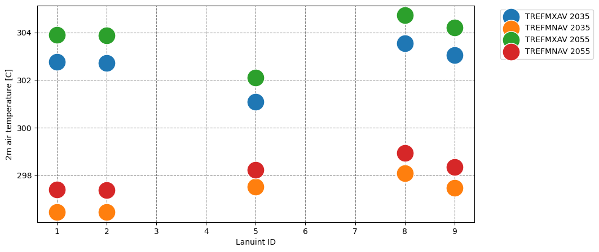

Single point modeling of CLMU
Junjie Yu, 2023-12-06, Manchester, UK
ENV: RL_urban; docker container: clmu; docker image: clmu-app:1
1 Get the shell script for running CESM/CLM
simulation location : New York City
New York City coordinates can be replaced with other city coordinates
40°42′46″N 74°00′22″W from https://en.wikipedia.org/wiki/New_York_City
New York City = {‘lat’: 40.42, ‘lon’: -74.00}
This case was forced with data from the previous simulation under SSP3-7.0 scenario. ref
This case requires users to manually download certain forcing data and make changes to the case configuration. Therefore, the user can choose to practice with a CTSM history simulation, which will automatically download all the required data for the user.
[1]:
from utils.cesm import *
print(now_time())
CASESCRIPT = "/p/project/clm5.0/cime/scripts"
CASESCRIPT_local = "/home/zhonghua/p/project/clm5.0/cime/scripts"
CASEROOT_local = "/home/zhonghua/p/scratch/CESMDATAROOT/CaseOutputs"
DOUT_S_ROOT = "/home/zhonghua/p/scratch/CESMDATAROOT/Archive"
# user defined script and json file
# parameters in the json file and scrpits shoule be consistent with PTS_script.sh and config_newyork.json
scriptpath = "./scr/PTS_SSP370.sh"
configpath = "config_SSP370.json"
cesm = cesm_run(CASESCRIPT, CASESCRIPT_local, CASEROOT_local, DOUT_S_ROOT, configpath)
#CASESCRIPT, the path of the CESM2/CTSM scripts folder
# e.g., CASESCRIPT = "/p/project/myclm/cime/scripts"
#CASESCRIPT_local, the path of the CESM2/CTSM scripts folder in the local machine
# e.g., CASESCRIPT_local = "/home/zhonghua/p/project/clm5.0/cime/scripts"
#CASEROOT_local, the path of the CESM2/CTSM case folder in the local machine
# e.g., CASEROOT_local = "/home/zhonghua/p/scratch/CESMDATAROOT/CaseOutputs"
#DOUT_S_ROOT, the path of the CESM2/CTSM output folder
# e.g., DOUT_S_ROOT = "/p/scratch/CESMDATAROOT/Archive"
#JSONPATH, the path of the json file or the json file
# e.g., JSONPATH = "config.json"
# e.g., JSONPATH = {"case_lat": 0.9,
# "case_lon": 1.25,
# "case_name": "test",
# "fsurdat": "/p/project/myclm/cime/scripts/f19_g16.B1850.f19_g16.c090918.clm2.r.0.5x0.5_20090202.nc"}
# password = "***"
password = input("Password of server: ")
# reset case
# if your server need password to run sudo command, you need to add "sudo -S" before the command and add the password
cesm.reset_case(password=password)
# change the permission of the script
command_0 = "sudo -S docker exec myclm chmod +x /p/pyscripts/PTS_SSP370.sh"
run_command(command_0, password)
# run the script
with open("/home/zhonghua/p/pyscripts/PTS_SSP370.sh", "w") as f:
f.write(cesm.create_case(scriptpath))
command = "sudo -S docker exec myclm sh -c '/p/pyscripts/PTS_SSP370.sh' "
run_command(command, password)
d0 = cesm.nc_view()
Current time: 2023-12-09 16:26:05
[sudo] password for zhonghua: [sudo] password for zhonghua:
2 Modify the data
[3]:
cesm.config['case_start_year'] = "2055"
cesm.config['case_start_year'] = "2055"
with open("/home/zhonghua/p/pyscripts/PTS_SSP370.sh", "w") as f:
f.write(cesm.create_case(scriptpath))
run_command(command, password)
d2055= cesm.nc_view()
[4]:
d2055
[4]:
<xarray.Dataset>
Dimensions: (levgrnd: 25, levlak: 10, levdcmp: 1, time: 3,
hist_interval: 2, lon: 1, lat: 1, column: 14,
gridcell: 1, landunit: 5, pft: 28)
Coordinates:
* levgrnd (levgrnd) float32 0.01 0.04 0.09 ... 19.48 28.87 42.0
* levlak (levlak) float32 0.05 0.6 2.1 4.6 ... 25.6 34.33 44.78
* levdcmp (levdcmp) float32 1.0
* time (time) object 2055-07-01 00:00:00 ... 2055-09-01 00:0...
* lon (lon) float32 286.2
* lat (lat) float32 40.05
Dimensions without coordinates: hist_interval, column, gridcell, landunit, pft
Data variables: (12/54)
mcdate (time) int32 ...
mcsec (time) int32 ...
mdcur (time) int32 ...
mscur (time) int32 ...
nstep (time) int32 ...
time_bounds (time, hist_interval) object ...
... ...
pfts1d_itype_veg (pft) int32 ...
pfts1d_itype_col (pft) int32 ...
pfts1d_itype_lunit (pft) int32 ...
pfts1d_active (pft) int32 ...
TREFMNAV (time, landunit) float32 ...
TREFMXAV (time, landunit) float32 ...
Attributes: (12/38)
title: CLM History file information
comment: NOTE: None of the variables ar...
Conventions: CF-1.0
history: created on 12/09/23 16:28:13
source: Community Land Model CLM4.0
hostname: clm5-docker
... ...
ctype_urban_shadewall: 73
ctype_urban_impervious_road: 74
ctype_urban_pervious_road: 75
cft_c3_crop: 1
cft_c3_irrigated: 2
time_period_freq: month_13 View the results
[6]:
import matplotlib.pyplot as plt
print(now_time())
fig, ax = plt.subplots(1, 1, figsize=(10, 5))
d0['TREFMXAV'].assign_coords({'landunit': d0['land1d_ityplunit'].values}).mean(dim='time').plot.scatter(s=500, ax=ax, label="TREFMXAV 2035")
d0['TREFMNAV'].assign_coords({'landunit': d0['land1d_ityplunit'].values}).mean(dim='time').plot.scatter(s=500, ax=ax, label="TREFMNAV 2035")
d2055['TREFMXAV'].assign_coords({'landunit': d0['land1d_ityplunit'].values}).mean(dim='time').plot.scatter(s=500, ax=ax, label="TREFMXAV 2055")
d2055['TREFMNAV'].assign_coords({'landunit': d0['land1d_ityplunit'].values}).mean(dim='time').plot.scatter(s=500, ax=ax, label="TREFMNAV 2055")
ax.set_xlabel('Lanuint ID')
ax.set_ylabel('2m air temperature [C]')
ax.legend(loc='upper left', bbox_to_anchor=(1.05, 1))
# Add grid lines
ax.grid(color='gray', linestyle='dashed')
# Set grid lines to align with x-axis ticks
ax.set_axisbelow(True)
plt.show()
Current time: 2023-12-09 16:29:16
